💻 要搭建一个完整的PHP动态网站，离不开操作系统、Web服务器、数据库、和PHP软件。
虽然有不错方便的方式，比如使用phpstudio等等等等许多面板都是非常快速不错的方式，但是这里是教会大家如何配置而不只是依赖别人整合好的面板软件，有时就会发挥出用处。
目录
以下是本文章的所采用的大概配置。
- 操作系统：Windows11
- Web服务器： 本文章采用Apache
- 数据库： MySQL
- PHP软件：用于解析PHP脚本文件
1、Visual Studio Code代码编辑器
这是一个非常好用的代码编辑器；
这是他的官网：Visual Studio Code - Code Editing. Redefined
进入以后是这样的界面
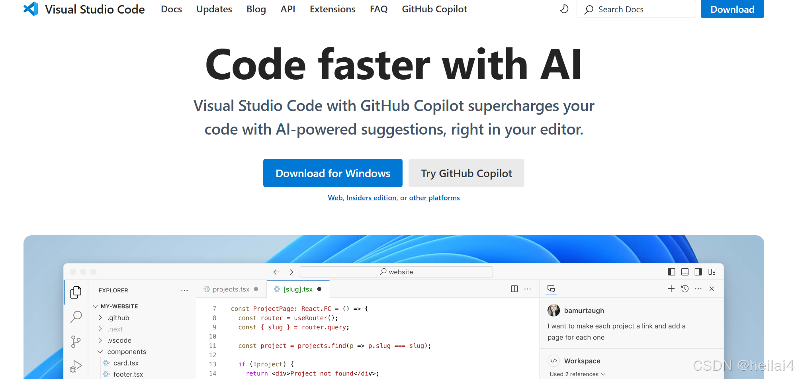点击中间蓝色的“Download for Windows”,就可以开始下载安装了，过程非常简单。
2、 安装Apache
我们先在C盘里面创建一个文件夹，名称叫什么都可以，然后将下载的Apache和PHP软件全丢里面，记得
一定要在C盘！！
Apache官网：Welcome! - The Apache HTTP Server Project
先进入官网，然后按照图片中标注的图框走：
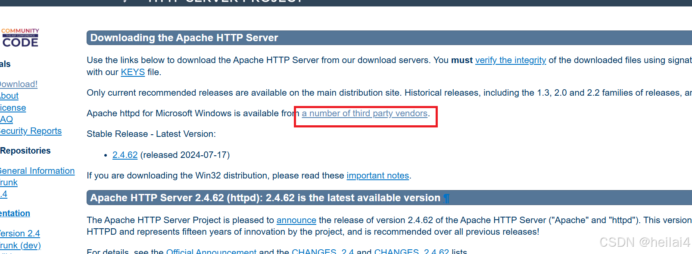
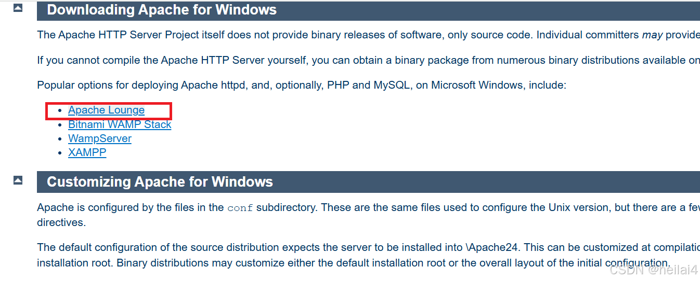
接下来可以选择64位和32位，看自己系统选。
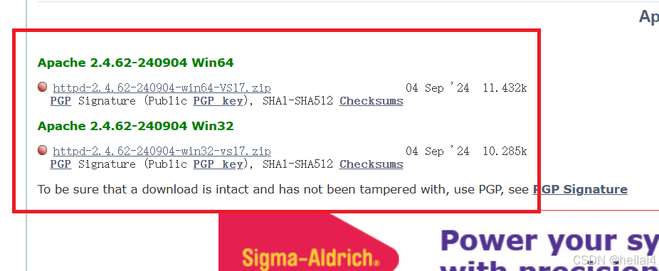
就可以下载啦！！
下载完以后一个.zip文件，我们将他解压到之前我们在C盘创建的文件夹里。
打开Apache所在的文件夹
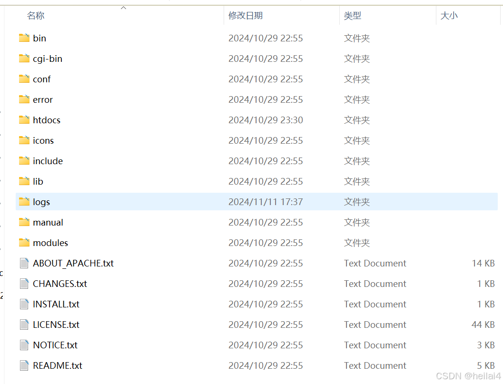
其中htdcs是默认的网站根目录网页文档目录，modules是Apache支持的动态加载模块所在的目录。
修改配置文件,配置安装路径。配置的文件是在Apache文件的conf/httpd.conf文件，使用VS Code编辑器打开它，找到第37行：
|
Define SRVROOT "c:/apache24"
上述代码用来配置Apache的安装路径，将路径修改为你自己安装的路径，比如我的是：
|
Define SRVROOT "C:webapache2.4"
按住“Ctrl + F”组合键，搜索“ServerName”，找到：
|
#ServerName www.example.com:80
将开头的“#”去掉，Apache通过命令行来安装
我们打开“开始”菜单，输入“命令提示符”，点击“以管理员身份运行”。
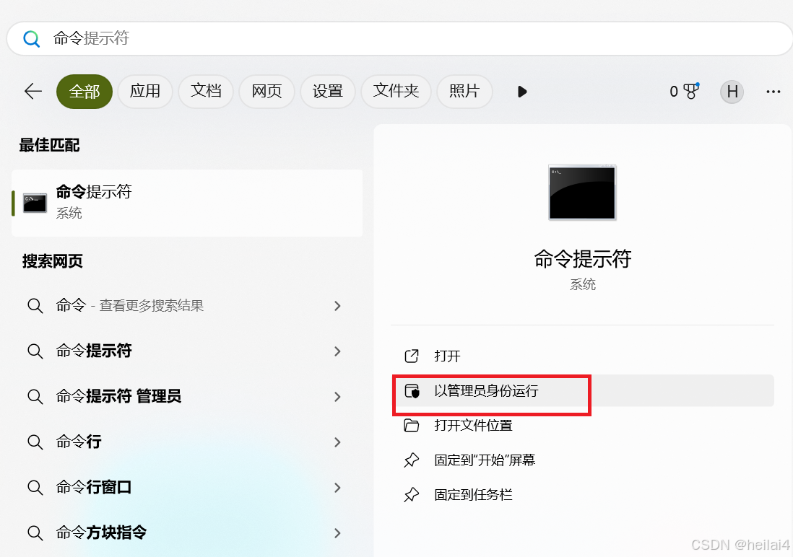
输入：
|
cd C:webapache2.4in
这里 cd 是一个指令，后面接的是你的 apache 的bin目录
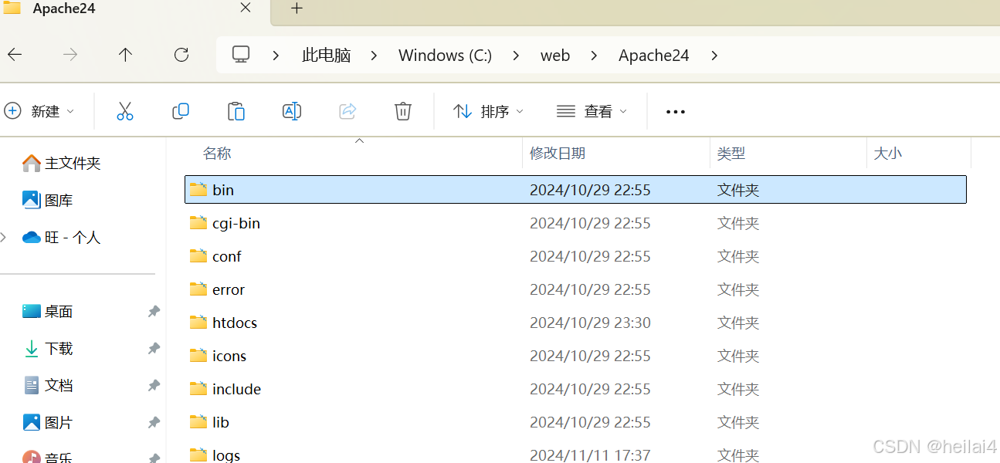
复制他的路径然后放上去；
接着输入：
|
httpd -k install -n Apache2.4
在上述命令中，httpd 表示Apache服务程序 httpd.exe ； “ -k install ” 表示将Apache安装为Windows系统的服务项， “-n Apache2.4 ”表示将Apache服务的名称设置为 Apache2.4
如果需要写在Apache，可以使用以下命令：
|
httpd -k uninstall -n Apache2.4
3、启动Apache
进入bin文件夹，找到：
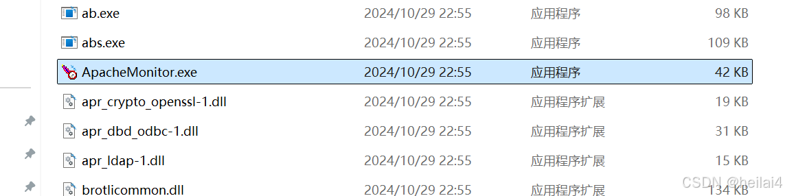
这个后缀为.exe的文件，双击打开即可
我们可以去浏览器里输入
http://localhost
然后回车，出现如下界面说明安装成功
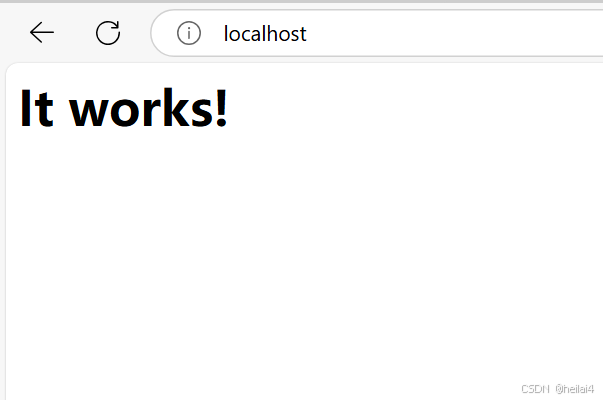
4、安装PHP
PHP既可以独立运行，也可以作为Apache的模块来运行，下面将会讲解如何将PHP安装为Apache的模块。
PHP官网：PHP: Hypertext Preprocessor
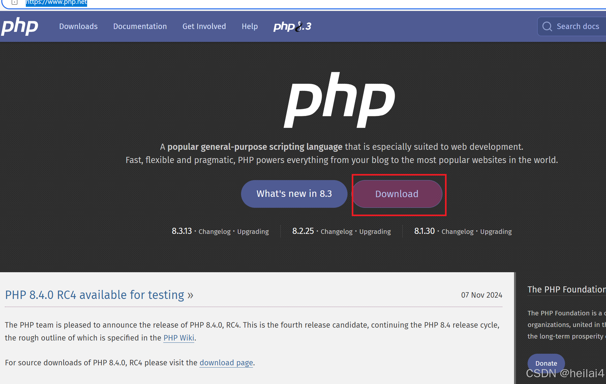
进入以后如上图所示，点击红色方框框起来的“Download”按钮；
进入下图，还是点击用红色方框框起来的地方下载：
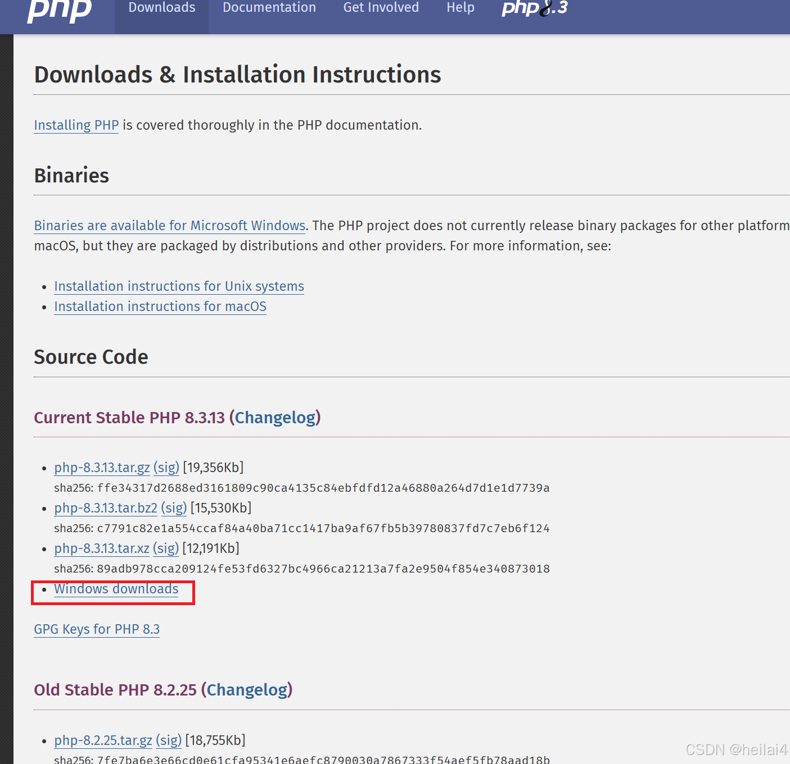
然后进入如下界面，仍旧跟着红色方框走：
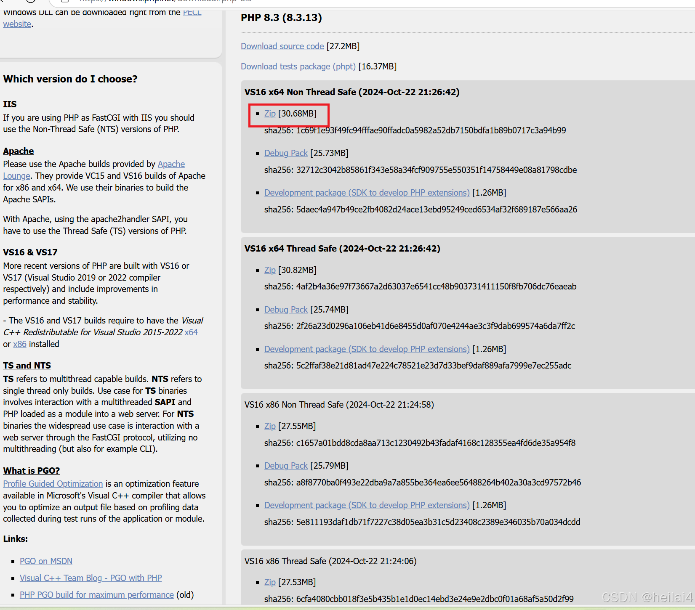
就开始下载了。
还记得之前安装Apache的时候不是创建过一个文件夹嘛，我们往其中放入了Apache，现在我们往里面放入PHP。
我们下载好了PHP文件，我们可以将它解压在这个文件夹。
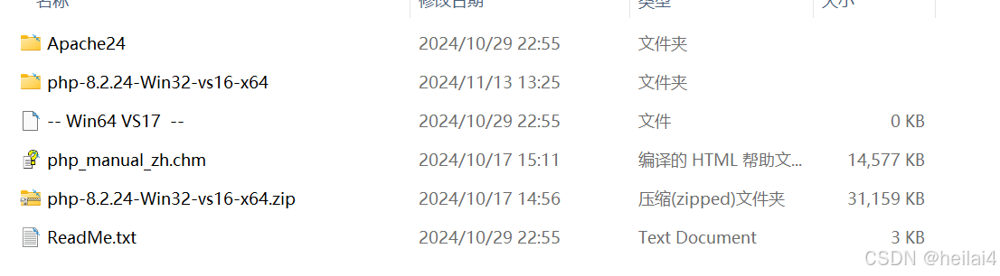
看，这就是我们之前创建的文件夹里所有的内容了，我把PHP的压缩包也放在了这里，不过无所谓；
现在这个文件夹里有了：
1、Apache服务软件
2、PHP软件。
你也来检查一下吧！
5、配置PHP
对于初学者来说，推荐使用开发环境配置。将 php.ini-development 文件复制一份，并重新粘贴更名为“php.ini”，作为PHP的配置文件。
打开php.ini，搜索文本 (ctrl + F) “ extension_dir ” , 找到如下配置：
|
;extension_dir="ext"
配置文件前面的 “ ；” 分号是用来注释的，也就是在打上了这个符号就意味着这行代码不生效
然后在下面一行 添加 以下代码：
|
extension_dir="C:webphp-8.2.24-Win32-vs16-x64ext"
这里的“C:webphp-8.2.24-Win32-vs16-x64ext”填写的是你的php的ext文件夹的路径，双击你安装好的php文件夹就能看到了：
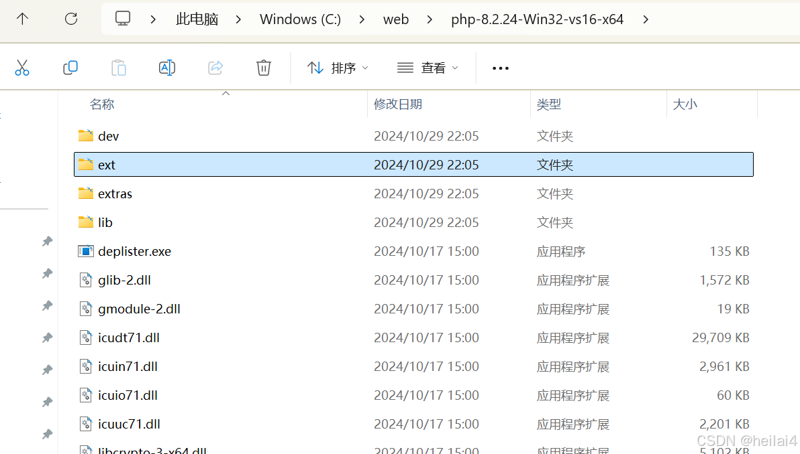
然后搜索**（ CTRL + F ）“date.timezone”**，找到如下配置：
|
;date.timezone=
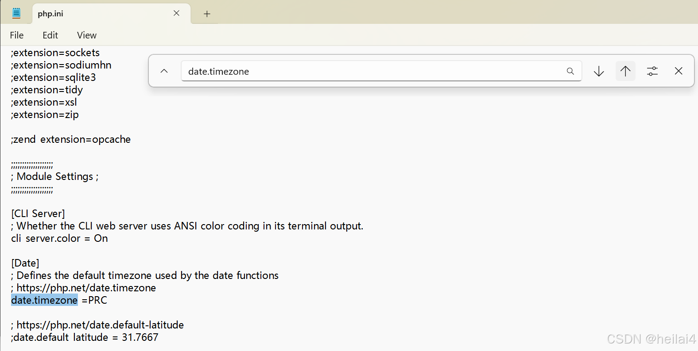
更改，配置后如图所示，就是以下代码：
|
date.timezone =PRC
记得去掉 “ ; ” 开头的分号！！
6、在Apache中引入PHP模块
打开Apache的配置文件，也就是"C:webApache24confhttpd.conf"的这个httpd.conf文件，
在第185行（前面有一些LoadModule配置）的位置将PHP中的Apache2.4模块引入，具体如下：
1 | LoadModule php_module "C:/web/php-8.2.24-Win32-vs16-x64/php8apache2_4.dll"
2 | <FilesMatch ".php$">
3 | SetHandler application/x-httpd-php
4 | </FilesMatch>
5 | PHPIniDir "C:/web/php-8.2.24-Win32-vs16-x64"
6 | LoadFile "C:/web/php-8.2.24-Win32-vs16-x64/libssh2.dll"
上面第一行表示将PHP作为Apache的模块来加载，
第2~4行用于配置php扩展名的文件，将其交给PHP来处理，
第5行指定了PHP初始化文件php.ini的路径；
第6行表示加载PHP目录中的libssh2.dll文件，确保PHP中的cURL扩展能够正确的加载。
也是就是说最后一行的文件路径就是PHP里的libssh2.dll文件的路径。
接着在配置文件中搜索DirectoryIndex，找到以下代码：
<
1 | IfModule dir_module>
2 | DirectoryIndex index.html<
3 | /IfModule>
这是配置初始的索引页面，我们在后面添加上index.php，如下：
<
1 | IfModule dir_module>
2 | DirectoryIndex index.html index.php<
3 | /IfModule>
7、重新启动Apache
修改Apache配置文件后，需要重新启动Apache，才能使配置生效。先单击状态栏右下角的Apache图标，选择Apache2.4，在控制菜单中点击“Restart”就可以重新启动，如下：
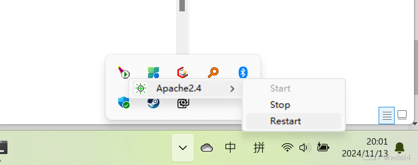
8、测试PHP模块是否安装成功
可以在在Apache的站点目录下C:webApache24htdocs ，也就是如下图这个文件夹：
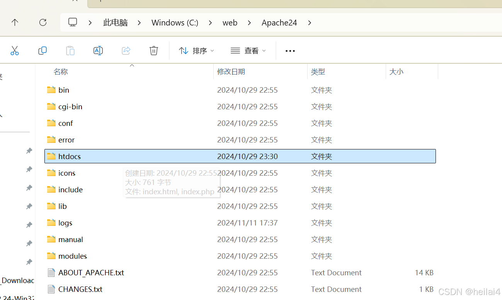
在这个文件夹里，使用最先下好的Visual Studio Code编辑器创建一个名为index.php的文件夹。
并写入以下内容：
1 | < ?php
2 | phpinfo();
3 |
4 | ?>
保存后接着打开浏览器，输入 http://localhost/index.php ,就可以看到下面的画面。、
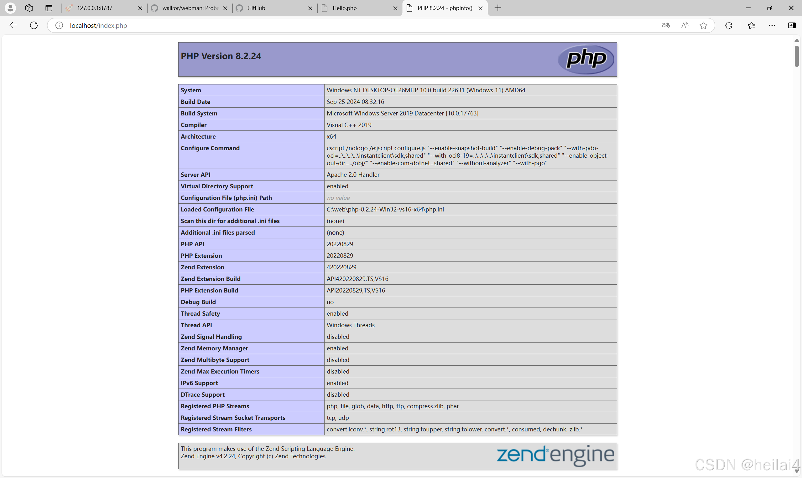
如果到达这一步；
恭喜你，已经成功配置好了PHP的基础开发环境！！
本文章到此结束